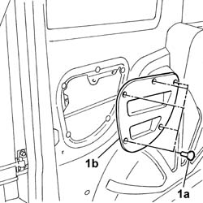
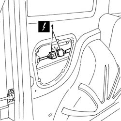
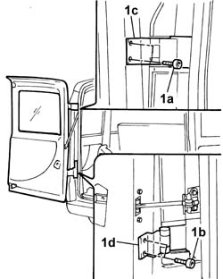

7210L25 (ONE) REAR SWING DOOR - R.R.
- Path
- Procedures > 72 PANELS AND FRAMES > 7210 REMOVING-REFITTING > 7210L specific parts for commercial vehicle > 7210L25 (ONE) REAR SWING DOOR - R.R.
- Kind
- repair procedure (removal / refitting; the operation number is the code)
- Applies to
- all engines; all production periods
- Interactive page
- https://sloeber94.github.io/elrnDB-fDbl/en/#/2585273
Applies to: all engines; all production periods
 Removing
Removing
 Refitting
RefittingDisconnect the battery negative terminal.
Applies to: all engines; all production periods; only with equipment: Doblò trim level
Applies to: all engines; all production periods; only with equipment: Cargo trim level
1. Prise up guard (1a) and recover fastening studs (1b).

Applies to: all engines; all production periods; only with equipment: Cargo trim level
1. Disconnect the door flap wiring electrical connector and withdraw the wiring.
 | Name | Connector |
|---|---|---|
1 | Tailgate rear seal/ | D85 |

Applies to: all engines; all production periods; only with equipment: Cargo trim level
1. Undo bolts (1a) and (1b) and take the door of upper hinges (1c) and lower hinges (1d).

Applies to: all engines; all production periods; only with equipment: Cargo trim level
Place the door on a stand.
Applies to: all engines; all production periods
Refitting
RemovingCheck the door paintwork is undamaged.
Touch up the paintwork if necessary.
Fit the door and do up the lower and upper hinge retaining bolts without tightening to torque.
Connect the ends of the door flap electrical wiring to the probe used during disassembly.
Pull the opposite end of the probe and replace the door wiring correctly.
Connect the electrical connector.
| Name | Connector |
|---|---|---|
- | Tailgate rear seal/ | D85 |
Applies to: all engines; all production periods; only with equipment: Cargo trim level
1. Fit guard (1a) and secure with studs (1b).
Applies to: all engines; all production periods; only with equipment: Doblò trim level
Applies to: all engines; all production periods; only with equipment: Doblò trim level
Connect the battery negative terminal.
7020E04 rear swinging door - adapt flaps/seals for centring and profiling